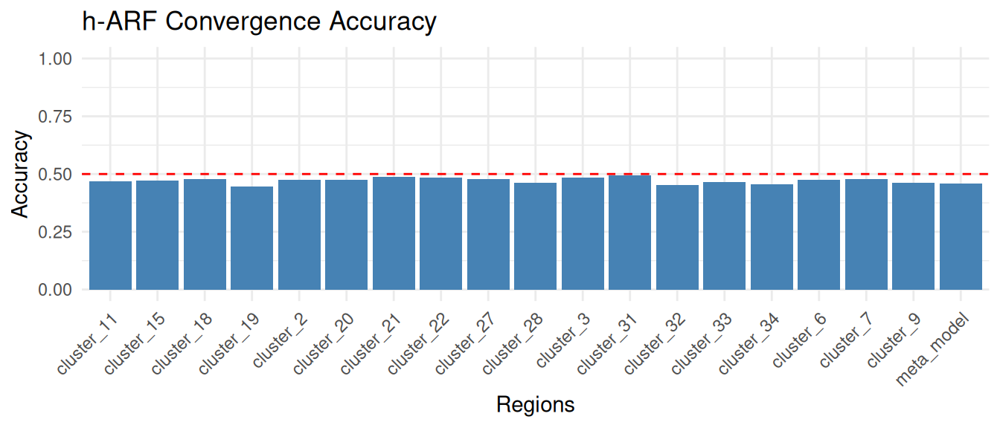
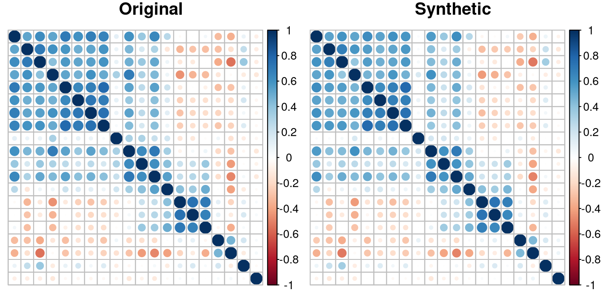
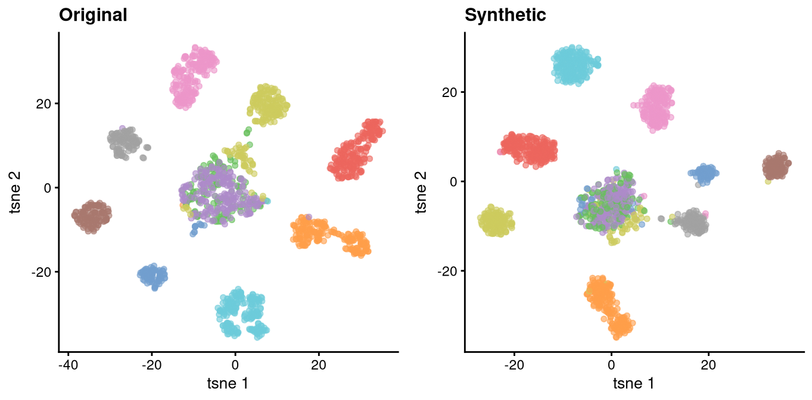
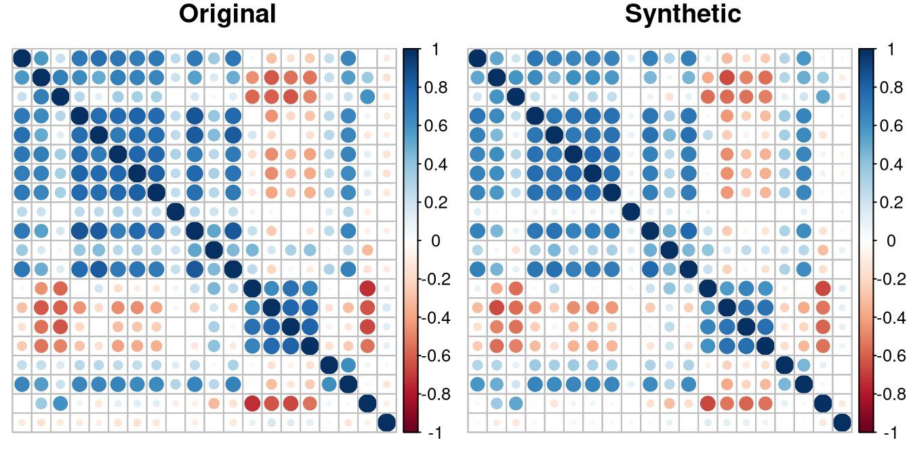
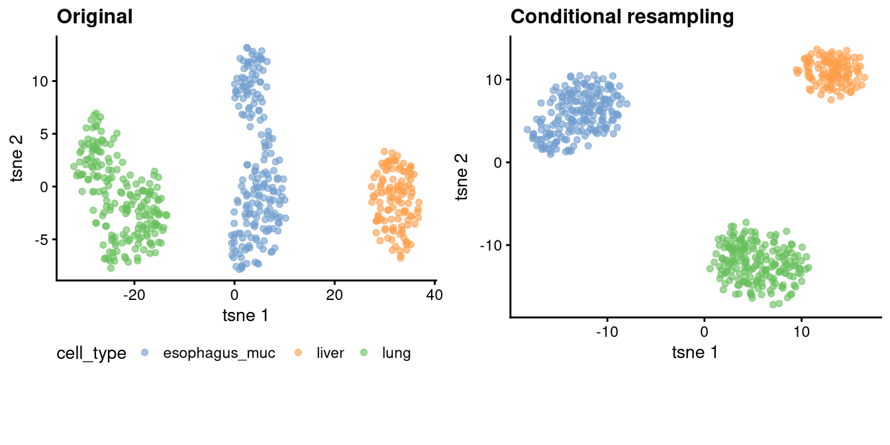

Introduction
The R package harf extends adversarial random
forests (ARFs) to high-dimensional data. This vignette serves as a user
guide to use the package effectively. Two key functionalities are
provided: h_arf to train and estimate densities in a
high-dimensional adversarial random forest ({h}-ARF), and
h_forge for the synthetic data generating process.
Unconditional and conditional data generating processes are supported.
The package is designed to handle high-dimensional omics data, such as
gene expression measurements, and can be applied to various downstream
analyses, including clustering (unsupervised) and classification to
generate synthetic data (supervised). For clustering, we illustrate the
usage of the harf package using a single-cell RNA-seq
dataset, where the goal is to generate synthetic data that preserves the
underlying structure of the original data. For prediction, illustration
is made based on gene expression data, with the goal to synthesize gene
expression data that can be used to assess the performance of a
prediction models in the absence of original datasets. Such a situation
typically arise when research face sample size limitation and do not
have enough of data to built and evaluate their prediction model.
Unsupervised data generating process
The package single cell built-in dataset single_cell
used in this vignette originate from The Cancer Genome Atlas (TCGA) and
the Genotype-Tissue Expression (GTEx) projects, two large-scale public
resources providing extensive RNA-seq data. The data were extracted from
previously processed and curated datasets generated using the pipeline
described in Aguet et al. (2017). This pipeline ensures log-transformed
gene measurements, expressed in at least
of cells. To keep the computational burden manageable for this vignette,
we randomly selected
genes and
from the original dataset. The included cells are grouped by human
organes, including bladder, breast, cervix, colon, esophagus
(gastroesophageal junction, mucosa, muscularis), kidney, liver, lung,
prostate, salivary gland, stomach, thyroid, and uterus. The variable
cell_type indicates the tissue of origin for each cell.
The following code requires some packages to be installed.
install.packages("data.table")
install.packages("rsvd")
install.packages("Rtsne")
install.packages("cowplot")
if (!require("BiocManager", quietly = TRUE))
install.packages("BiocManager")
BiocManager::install("SingleCellExperiment")
BiocManager::install("scater")
install.packages("ggplot2")
install.packages("corrplot")
install.packages("doParallel")We load the required libraries.
library(harf)
library(data.table)
library(rsvd)
library(Rtsne)
library(cowplot)
library(SingleCellExperiment)
library(ggplot2)
library(corrplot)
library(scater)
library(doParallel)In genetic epidemiology studies, molecular (omics) data are typically accompanied by clinical or phenotypic variables that provide essential contextual information. The h-ARF framework assumes that input data consist of two components: (i) high-dimensional numeric omics features and (ii) associated clinical or phenotypic variables, which may be mixed (categorical or numeric). In the following example, gene expression measurements are used as the omics data, while cell type serves as the labor information. Our first aim is to train a generative model to generate synthetic data that preserves the underlying structure of the original data, including the correlation structure between features and the cluster structure of cells.
data("single_cell")
chunk_size <- 5We set the chunk size size to 5 for illustration, but in practice, users may need to tune this parameter to achieve a predefined level, for a given performance measure.
High-dimensional adversarial game
We train a {h}-ARF model using the h_arf function. The
gene expression measurements are provided as the omx_data
argument, while the cell type information is passed as the
cli_lab_data argument. We set the maximal chunk size to 5,
to specify that maximal number of features allowed in an isolated
region. This parameter is crucial for three main aspects, including (i)
controlling the convergence of ARF in the isolated regions, (ii)
learning the joint pattern between features, and (iii) managing the
runtime.
my_omx_data <- single_cell[ , - which(colnames(single_cell) == "cell_type")]
my_cli_lab_data <- data.frame(cell_type = single_cell$cell_type)
harf_model <- h_arf(
omx_data = my_omx_data,
cli_lab_data = my_cli_lab_data,
feature_ordering = colnames(single_cell),
parallel = FALSE,
chunk_size = chunk_size,
verbose = TRUE
)
#> Iteration: 0, Accuracy: 77.86%
#> Iteration: 1, Accuracy: 45.87%
#> Iteration: 0, Accuracy: 86.56%
#> Iteration: 1, Accuracy: 47.4%
#> Iteration: 0, Accuracy: 85.36%
#> Iteration: 1, Accuracy: 48.34%
#> Iteration: 0, Accuracy: 82.59%
#> Iteration: 1, Accuracy: 47.35%
#> Iteration: 0, Accuracy: 85.9%
#> Iteration: 1, Accuracy: 47.96%
#> Iteration: 0, Accuracy: 82.84%
#> Iteration: 1, Accuracy: 46.07%
#> Iteration: 0, Accuracy: 86.93%
#> Iteration: 1, Accuracy: 51.44%
#> Iteration: 2, Accuracy: 46.78%
#> Iteration: 0, Accuracy: 89.29%
#> Iteration: 1, Accuracy: 50.87%
#> Iteration: 2, Accuracy: 47.28%
#> Iteration: 0, Accuracy: 87.25%
#> Iteration: 1, Accuracy: 53.55%
#> Iteration: 2, Accuracy: 47.88%
#> Iteration: 0, Accuracy: 84.92%
#> Iteration: 1, Accuracy: 44.72%
#> Iteration: 0, Accuracy: 86.39%
#> Iteration: 1, Accuracy: 47.54%
#> Iteration: 0, Accuracy: 82.95%
#> Iteration: 1, Accuracy: 48.75%
#> Iteration: 0, Accuracy: 85.69%
#> Iteration: 1, Accuracy: 48.42%
#> Iteration: 0, Accuracy: 81.66%
#> Iteration: 1, Accuracy: 47.9%
#> Iteration: 0, Accuracy: 81.52%
#> Iteration: 1, Accuracy: 46.26%
#> Iteration: 0, Accuracy: 86.78%
#> Iteration: 1, Accuracy: 49.27%
#> Iteration: 0, Accuracy: 84.67%
#> Iteration: 1, Accuracy: 50.14%
#> Iteration: 2, Accuracy: 45.39%
#> Iteration: 0, Accuracy: 85.79%
#> Iteration: 1, Accuracy: 52.05%
#> Iteration: 2, Accuracy: 46.67%
#> Iteration: 0, Accuracy: 86.91%
#> Iteration: 1, Accuracy: 50.77%
#> Iteration: 2, Accuracy: 45.71%
str(harf_model,max.level = 1)
#> List of 10
#> $ meta_model :List of 3
#> $ cor_matrix : NULL
#> $ models :List of 18
#> $ cluster :'data.frame': 80 obs. of 2 variables:
#> $ meta_features :'data.frame': 1652 obs. of 3 variables:
#> $ omx_features : chr [1:80] "V1" "V2" "V3" "V4" ...
#> $ cli_lab_features : chr "cell_type"
#> $ omx_constant_data: NULL
#> $ feature_ordering : chr [1:81] "cell_type" "V1" "V2" "V3" ...
#> $ accuracy : Named num [1:19] 0.459 0.474 0.483 0.474 0.48 ...
#> ..- attr(*, "names")= chr [1:19] "meta_model" "cluster_2" "cluster_3" "cluster_6" ...
#> - attr(*, "class")= chr "harf"Inspect accuracy of the {h}-ARF model
We plot the accuracy of the {h}-ARF model across the training regions and the meta region to ensure that the adversarial game has converged properly. An accuracy lesser than indicates that the ARF model locally converged, i.e. it stopped because it had not been able to distinguish between original and synthetic data. In contrast, an accuracy larger than indicates that the ARF did not locally converge. We recommend to set the chunk size parameter such that the local ARF model converge.
acc_df <- data.frame(
Region = names(harf_model$accuracy),
Accuracy = harf_model$accuracy
)
acc_plot <- ggplot2::ggplot(acc_df, ggplot2::aes(x = Region, y = Accuracy)) +
ggplot2::geom_hline(yintercept = 0.5, linetype = "dashed", color = "red") +
ggplot2::geom_bar(stat = "identity", fill = "steelblue") +
ggplot2::ylim(0, 1) +
ggplot2::labs(title = "h-ARF Convergence Accuracy",
x = "Regions",
y = "Accuracy") +
ggplot2::theme_minimal() +
ggplot2::theme(axis.text.x = ggplot2::element_text(angle = 45, hjust = 1))
acc_plot
Generating synthetic data
We use the h_forge function to generate sznthsize single
cell data using the trained {h}-ARF model. Here, we generate the same
number of synthetic samples as in the original dataset, and without any
evidence, i.e. without any prio information regarding the the single
cell classes (evidence = NULL). As we will see later, the
evidence argument can be used to generate synthetic data
conditionally on a specific cell types. The generated synthetic data are
stored in the synth_single_cell object.
Comparaison of correlation matrices
We visually compare the correlation matrices of the original data and the synthetic data. To enhance interpretability, we rearrange the features according to their region assignments obtained from the {h}-ARF model. The correlation plots exhibit similar patterns across the three datasets, indicating that the {h}-ARF model effectively preserve the origin feature correlation structure.
# Re-arrange data by grouping gene by clusters
cluster_feature <- copy(harf_model$cluster)
setorder(cluster_feature, cluster)
orig_clustered <- single_cell[ , c("cell_type", cluster_feature$feature)]
synth_clustered <- as.data.frame(synth_single_cell)[ , c("cell_type", cluster_feature$feature)]
plot_corr <- function(dt, title) {
corr_matrix <- cor(dt[ , 2:21], method = "spearman")
corrplot(corr_matrix,
method = "circle",
tl.col = "black",
tl.pos = "n",
title = title,
mar = c(0, 0, 1, 0))
}Show original and synthetic data in 2D using t-SNE
We use t-SNE to visualize cells in a two-dimensional space. Original cell clusters are preserved in the synthetic data, indicating that the {h}-ARF model effectively captures the underlying cluster structure of the original data.
tsne_it <- function (sc_data, perp = 30, title = "") {
# Create SingleCellExperiment object
sce <- SingleCellExperiment::SingleCellExperiment(
assays = list(counts = t(as.matrix(sc_data[ , - which(colnames(sc_data) == "cell_type")])))
)
SingleCellExperiment::logcounts(sce) <- SingleCellExperiment::counts(sce) # Log-normalization
sce$cell_type <- sc_data$cell_type
pc_sce <- rpca(t(SingleCellExperiment::counts(sce)))
# tSNE with rotated pcs
ts_sce <- Rtsne::Rtsne(
pc_sce$x %*% pc_sce$rotation,
perplexity = perp,
verb = FALSE,
pca = FALSE,
check_duplicates = FALSE
)
SingleCellExperiment::reducedDim(sce, "tsne") = ts_sce$Y
sce_plot <- scater::plotReducedDim(sce, "tsne", colour_by = "cell_type") +
ggplot2::ggtitle(title) +
ggplot2::theme(legend.position = "bottom")
return(sce_plot)
}
orig_plot <- tsne_it(single_cell,
perp = 30,
title = "Original")
synth_plot <- tsne_it(as.data.frame(synth_single_cell),
perp = 30,
title = "Synthetic")
legend <- cowplot::get_legend(
orig_plot + theme(legend.position = "bottom")
)
orig_plot <- orig_plot + theme(legend.position = "none")
synth_plot <- synth_plot + theme(legend.position = "none")
all_plots <- cowplot::plot_grid(orig_plot,
synth_plot,
ncol = 2)
par(mfrow = c(1,2))
plot_corr(orig_clustered, "Original")
plot_corr(synth_clustered, "Synthetic")

Conditional resampling
The evidence parameter is required for conditional
resampling. We generate synthetic samples for each cell typ separately.
The generated samples are then combined to form the final synthetic
dataset. For these example, we synthesize lung, liver and esophagus
mucosa cell types. Both the correlation structure and the cluster
structure are well preserved in the conditionally generated synthetic
data.
sub_cell_type <- c("lung", "liver", "esophagus_muc")
single_cell_list <- lapply(sub_cell_type, function (ct) {
ct_synth <- h_forge(
harf_obj = harf_model,
n_synth = sum(single_cell$cell_type == ct),
evidence = data.frame(cell_type = ct),
verbose = FALSE,
parallel = FALSE
)
return(ct_synth)
})
cond_synth_single_cell <- do.call(rbind, single_cell_list)
cond_synth_clustered <- as.data.frame(cond_synth_single_cell)[ , c("cell_type", cluster_feature$feature)]
cond_synth_plot <- tsne_it(as.data.frame(cond_synth_single_cell),
perp = 30,
title = "Conditional resampling")
sub_legend <- cowplot::get_legend(
cond_synth_plot + theme(legend.position = "none")
)
cond_synth_plot <- cond_synth_plot + theme(legend.position = "none")
sub_single_cell <- orig_clustered[orig_clustered$cell_type %in% sub_cell_type , ]
sub_orig_plot <- tsne_it(sub_single_cell,
perp = 30,
title = "Original")
legend <- cowplot::get_legend(
orig_plot + theme(legend.position = "bottom")
)
sub_all_plots <- cowplot::plot_grid(sub_orig_plot,
cond_synth_plot,
ncol = 2)
par(mfrow = c(1,2))
plot_corr(sub_single_cell, "Original")
plot_corr(cond_synth_clustered, "Synthetic")

Again, both the correlation structure and the cluster structure are well preserved in the conditionally generated synthetic data.
Supervised data generating process
The goal is to generate synthetic gene expression data that can be
used to evaluate the performance of a prediction model in the absence of
original testing datasets, in a situation in which researchers may not
have enough samples for eventual internal validation such as
corss-validation. As supervised downstream analysis example, we consider
the Cancer Genome Atlas Kidney Chromophobe Collection (TCGA-KICH) gene
expression predictors, with artificial tumor stage as binary response
variable, since the provided original tumor stages were difficult to
predict. The dataset contains
samples and the top
gene expression with the highest empirical variances. We include age and
gender as additional clinical variables. We scale gene expressions and
age. To create the response variable, we fix age and the first
gene expression variables to drive an effect. We set the effect of age
to
,
and draw the effects of gene expressions uniformly from interval
.
Subsequently, we train a {h}-ARF model using the h_arf
function on the training data, where the gene expression measurements
are provided as the omx_data argument, and the binary
outcome variable and addition variables including age and gender
(
males and
females) are passed as the cli_lab_data argument. We also
specify the target variable using the parameter target. We
set the maximal chunk size to
,
to specify the maximal number of features allowed in an isolated region.
After training the {h}-ARF model, we use the h_forge
function to generate synthetic training dataset. We then train a
prediction model, on the original and the synthetic training data and
evaluate their performances a common testing data. We report the area
Receiver Operating Characteristic (ROC) curve (AUC) as performance
metric. We expect that the prediction model trained on the synthetic
data will have a similar performance to the one trained on the original
data, indicating that the {h}-ARF model effectively captures the
underlying structure of the original data and can be used to generate
realistic synthetic datasets for prediction tasks.
We set up the required libraries.
library(data.table)
library(pROC) # If not installed, use install.packages("pROC") to install it.
library(caret) # If not installed, use install.packages("caret") to install it.
library(ranger) # If not installed, use install.packages("ranger") to install it.
seed <- 123We load the kich dataset and create training and testing
indices.
data("kich")
set.seed(seed)
train_idx <- caret::createDataPartition(
kich$tumor_stage,
p = 0.7,
list = FALSE
)
train_idx <- train_idx[ , "Resample1"]We use the ranger package to train a random forest model
on the original training data and evaluate its performance on the
testing data.
Prediction model trained on the original data
set.seed(seed)
rf_model <- ranger(tumor_stage ~ .,
data = kich[train_idx, ],
num.trees = 500,
probability = FALSE)
# Estimate AUC on the test set
test_pred <- predict(rf_model, data = kich[-train_idx, ])$predictions
test_labels <- kich$tumor_stage[-train_idx]
auc_original <- roc(test_labels, as.numeric(test_pred))$auc
print(paste("AUC:", auc_original))
#> [1] "AUC: 0.9375"Supervised adversarial game
We train a {h}-ARF model using the h_arf function on the
training data, where the gene expression measurements are provided as
the omx_data argument, and the binary outcome variable and
addition variables including age and gender are passed as the
cli_lab_data argument.
set.seed(seed)
kich_harf <- h_arf(
omx_data = kich[train_idx , !(colnames(kich) %in% c("tumor_stage",
"age", "gender"))],
cli_lab_data = kich[train_idx, c("tumor_stage", "age", "gender")],
chunk_size = 10,
target = "tumor_stage",
verbose = TRUE
)
#> Iteration: 0, Accuracy: 40.22%
#> Iteration: 0, Accuracy: 47.87%
#> Iteration: 0, Accuracy: 48.94%
#> Iteration: 0, Accuracy: 49.46%
#> Iteration: 0, Accuracy: 50.54%
#> Iteration: 1, Accuracy: 44.09%
#> Iteration: 0, Accuracy: 54.84%
#> Iteration: 1, Accuracy: 44.68%
#> Iteration: 0, Accuracy: 60.22%
#> Iteration: 1, Accuracy: 38.3%
#> Iteration: 0, Accuracy: 48.91%
#> Iteration: 0, Accuracy: 48.39%
#> Iteration: 0, Accuracy: 54.26%
#> Iteration: 1, Accuracy: 42.55%
#> Iteration: 0, Accuracy: 53.26%
#> Iteration: 1, Accuracy: 43.62%
#> Iteration: 0, Accuracy: 50.54%
#> Iteration: 1, Accuracy: 46.81%
#> Iteration: 0, Accuracy: 56.99%
#> Iteration: 1, Accuracy: 38.04%
#> Iteration: 0, Accuracy: 46.74%
#> Iteration: 0, Accuracy: 47.87%
#> Iteration: 0, Accuracy: 55.91%
#> Iteration: 1, Accuracy: 46.24%
#> Iteration: 0, Accuracy: 48.39%
#> Iteration: 0, Accuracy: 46.24%
#> Iteration: 0, Accuracy: 55.43%
#> Iteration: 1, Accuracy: 44.68%Generating synthetic data
We now use the h_forge function to generate synthetic
training dataset.
# Synthetic data
set.seed(seed)
synth_kich <- h_forge(
harf_obj = kich_harf,
n_synth = length(train_idx),
evidence = NULL,
parallel = FALSE
)
synth_kich <- as.data.frame(synth_kich)Prediction model trained on the synthetic data
We train a prediction model on the synthetic training data and evaluate its performance on the testing data, the same testing data used to evaluate the model trained on the original data.
set.seed(seed)
rf_model_synth <- ranger(tumor_stage ~ .,
data = synth_kich,
num.trees = 500,
probability = FALSE)
# Estimate AUC on the test set
test_pred_synth <- predict(rf_model_synth, data = kich[-train_idx, ])$predictions
auc_synth <- roc(test_labels, as.numeric(test_pred_synth))$auc
auc_comparison <- data.frame(
Model = c("Original", "Synthetic"),
AUC = c(auc_original, auc_synth)
)
print(auc_comparison)
#> Model AUC
#> 1 Original 0.9375000
#> 2 Synthetic 0.8465909As expected, the prediction model trained on the synthetic data has a similar performance to the one trained on the original data, indicating that the synthetic datasets can be used for prediction tasks. Our illustration simulated a single run, but in practice, users may want to repeat the process multiple times to assess the variability of the results. As in the unsupervised case, users may also want to tune the chunk size parameter in the adversarial game to achieve a predefined level of performance.
Conclusion
We introduced the R package harf to synthesize high-dimensional data. The package extends the adversarial random forest framework to effectively handle high-dimensional omics data and supports both unconditional and conditional data generation. We have illustrated the usage of the package in both unsupervised and supervised downstream analysis contexts. In the unsupervised context, we demonstrated that the {h}-ARF model can effectively capture the underlying structure of the original data, including the correlation structure between features and the cluster structure of cells. In the supervised context, we showed that synthetic datasets generated by the {h}-ARF model can be used to train prediction models that achieve similar performance to those trained on original data. Therefore, offering a powerful tool for generating realistic synthetic datasets to improve prediction performance in case of lack of training datasets.
References
The Cancer Genome Atlas Pan-Cancer analysis project. Nature Genetics, 45, 1113–1120 (2013). Link here.
The Genotype-Tissue Expression (GTEx) project. Nature Genetics, 47, 1231–1237. (2015). Link here.
Genetic effects on gene expression across human tissues. Nature, 550, 204–213. (2017). Link here.
Q. Wang, J Armenia, C. Zhang, A.V. Penson, E. Reznik, L. Zhang, T. Minet, A. Ochoa, B.E. Gross, C. A. Iacobuzio-Donahue, D. Betel, B.S. Taylor, J. Gao, N. Schultz. Unifying cancer and normal RNA sequencing data from different sources. Scientific Data 5:180061, 2018. Link here.
Fouodo, C. J. K., et al. (2026). High-dimensional adversarial random forests. Submission. Link don’t click.
Watson, D. S., Blesch, K., Kapar, J. & Wright, M. N. (2023). Adversarial random forests for density estimation and generative modeling. In Proceedings of the 26th International Conference on Artificial Intelligence and Statistics. Link here.